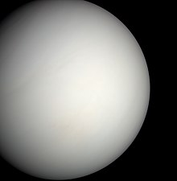
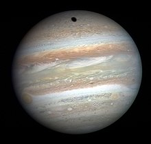

We see the planets and time galaxies and different timeperiods
Here we see the example of kelper-1649c there the structure of 1649c is quite diffrent to earth but it not have humans and plants only
have mountains etc here we explore all detail
in explore tab then you can read more
here we can see how the planet is during life time as well as inside of structures like core,mantal,and emf and outside of solar wind and how it survive until the dead planet
Here we see the all galaxies and their
planets and their solar system
Here we see the galaxy example of human live in earth the earth are live in solor system the solor system in live in galaxy so the milky way the inside the solor system the only living planet is earth because the earth only survive even hot condition due to EMF only it can surivive if you want detail go to through explore
Galaxy Tour
Milky way
The Milky Way is the galaxy that includes the Solar System, with the name describing the galaxy's appearance from Earth: a hazy band of light seen in the night sky formed from stars that cannot be individually distinguished by the naked eye. The term Milky Way is a translation of the Latin via lactea, from the Greek γαλακτικὸς κύκλος (galaktikòs kýklos), meaning "milky circle".From Earth, the Milky Way appears as a band because its disk-shaped structure is viewed from within.
Andromeda Galaxy
The Andromeda Galaxy is a barred spiral galaxy and is the nearest major galaxy to the Milky Way. It was originally named the Andromeda Nebula and is cataloged as Messier 31, M31, and NGC 224. Andromeda has a diameter of about 46.56 kiloparsecs (152,000 light-years) and is approximately 765 kpc (2.5 million light-years) from Earth. The galaxy's name stems from the area of Earth's sky in which it appears, the constellation of Andromeda, which itself is named after the princess who was the wife of Perseus in Greek mythology.
NGC 4622
The spiral galaxy, NGC 4622 (also called Backward galaxy), lies approximately 111 million light years away from Earth in the constellation Centaurus. NGC 4622 is an example of a galaxy with leading spiral arms.Each spiral arm winds away from the center of the galaxy and ends at an outermost tip that "points" in a certain direction (away from the arm). Spiral arms were thought to always trail, meaning that the outermost tip of every spiral arm points away from the direction of the disk's orbital rotation. This is true of the inner spiral arm of NGC 4622 but not of its outer spiral arms. The outer arms of NGC 4622 are instead leading spiral arms, meaning the tips of the spiral arms point towards the direction of disk rotation. This may be the result of a gravitational interaction between NGC 4622 and another galaxy or the result of a merger between NGC 4622 and a smaller object.
Planets tour
What is planet tour
A planet tour is ajourney to explore the planets in our solar system.It is an exciting and educational experience that can be teach different planets only here we explore like mecury venus mars jupiter saturn neputune and urnus including Pluto here i give short video with help of VR(Virtual Reality) like jupiter,saturn,neptune and urnus like that Let get start.
Rocky planets
Mecury
Mercury is the first planet from the Sun and the smallest in the Solar System. It is a terrestrial planet with a heavily cratered surface due to overlapping impact events. These features are well preserved since the planet has no geological activity and an extremely tenuous atmosphere called an exosphere. Despite being the smallest planet in the Solar System with a mean diameter of 4,880 km (3,030 mi), 38% of that of Earth, Mercury is dense enough to have roughly the same surface gravity as Mars. Mercury has a dynamic magnetic field with a strength about 1% of that of Earth's and has no natural satellites.
Venus

Venus is the second planet from the Sun. It is a rocky planet with the densest atmosphere of all the rocky bodies in the Solar System, and the only one with a mass and size that is close to that of its orbital neighbour Earth. Orbiting inferiorly (inside of Earth's orbit), it appears in Earth's sky always close to the Sun, as either a "morning star" or an "evening star". While this is also true for Mercury, Venus appears much more prominently, since it is the third brightest object in Earth's sky after the Moon and the Sun appearing brighter than any other star-like classical planet or any fixed star. With such prominence in Earth's sky, Venus has historically been a common and important object for humans, in both their cultures and astronomy.
Earth
Earth is the third planet from the Sun and the only astronomical object known to harbor life. This is enabled by Earth being a water world, the only one in the Solar System sustaining liquid surface water. Almost all of Earth's water is contained in its global ocean, covering 70.8% of Earth's surface. The remaining 29.2% of Earth's surface is land, most of which is located in the form of continental landmasses within one hemisphere, Earth's land hemisphere. Most of Earth's land is somewhat humid and covered by vegetation, while large sheets of ice at Earth's polar deserts retain more water than Earth's groundwater, lakes, rivers and atmospheric water combined. Earth's land is part of Earth's crust, consisting of several slowly moving tectonic plates, which interact to produce mountain ranges, volcanoes, and earthquakes.
Mars
The mars is a fourth planet of the solar system here the mars is a blue planet is previous 4.5 billions ago after it have low mars and it have less EMF that why it cases damage the planet the sun have more protons that have solar wind that go to escape the mars planet that planet loss atmosphere and oxygen and nitrogen.
Jupiter

Jupiter is the fifth planet from the Sun and the largest in the solar system. It is a gas giant with a mass more than two and a half times that of all the other planets in the solar system combined, and slightly less than one one-thousandth the mass of the Sun1. Jupiter orbits the Sun at a distance of 5.20 AU (778.5 Gm) with an orbital period of 11.86 years1. Jupiter is the third brightest natural object in the Earth’s night sky after the Moon and Venus, and it has been observed since prehistoric times1.
Saturn
Jupiter has a thick atmosphere composed mainly of hydrogen and helium, with traces of other gases such as methane, ammonia, water, and hydrogen deuteride1. Jupiter’s atmosphere is divided into several bands of clouds that vary in color and thickness, creating a striped appearance. The most prominent feature in Jupiter’s atmosphere is the Great Red Spot, a giant storm that has been raging for hundreds of years and is larger than Earth1.
Uranus
Uranus is the seventh planet from the Sun and the second-largest in the solar system, after Jupiter1. It is a gas giant with an average radius of about nine and a half times that of Earth1. It has only one-eighth the average density of Earth, but is over 95 times more massive1.Uranus is named after the Roman god of agriculture and wealth, who was also the father of Jupiter1. It was discovered by William Herschel in 1781, making it the first planet to be found with a telescope1. Herschel initially wanted to name it Georgium Sidus (George’s star) after his patron, King George III of England, but the name Uranus was eventually adopted by the scientific community1.
Neptune
Neptune is the eighth and farthest planet from the Sun. It is the fourth-largest planet in the Solar System by diameter, the third-most-massive planet, and the densest giant planet. It is 17 times the mass of Earth, and slightly more massive than its near-twin Uranus1. Neptune is composed primarily of gases and liquids, and has no well-defined solid surface1. The planet orbits the Sun once every 164.8 years at an orbital distance of 30.1 astronomical units (4.5 billion kilometres; 2.8 billion miles)12. It is named after the Roman god of the sea and has the astronomical symbol , representing Neptune’s trident1.
Exoplanets Tour
Kelper-1649-c
Kepler-1649c is an Earth-sized exoplanet, likely rocky, orbiting within the habitable zone of the red dwarf star Kepler-1649, the outermost planet of the planetary system discovered by Kepler’s space telescope. It is located about 301 light-years (92 pc) away from Earth, in the constellation of Cygnus.
Kepler-1649c orbits its star a distance of 0.0649 AU (9.71 million km;)( 6.03 million mi) from its host star with an orbital period of roughly 19.53 days, has a mass 1.2x times that of Earth, and has a radius of around 1.02 times that of Earth.
Kelper-22b
Kepler-22b (also known by its Kepler object of interest designation
KOI-087.01) is an exoplanet orbiting within the habitable zone of the Sun-like star Kepler-22. It is located about 640 light-years (200 parsecs) from Earth in the constellation of Cygnus. It was discovered by NASA's Kepler Space Telescope in December 2011 and was the first known transiting planet to orbit within the habitable zone of a Sun-like star, where liquid water could exist on the planet's surface.[4] Kepler-22 is too dim to be seen with the naked eye.
Proxima Centurai
Proxima Centauri b (or Proxima b[5]), sometimes referred to as Alpha Centauri Cb, is an exoplanet orbiting within the habitable zone of the red dwarf star Proxima Centauri, which is the closest star to the Sun and part of the larger triple star system Alpha Centauri. It is about 4.2 ly (1.3 pc) from Earth in the constellation Centaurus, making it, along with the currently-disputed Proxima c, and Proxima d the closest known exoplanets to the Solar System.
Proxima Centauri b orbits its parent star at a distance of roughly 0.05 AU (7.5 million km; 4.6 million mi) with an orbital period of approximately 11.2 Earth days.
Explore
Virgin Galactic Lauches
Eve carried Unity high into the New Mexico skies, ultimately releasing the space plane at 12:10 p.m. EDT (1610 GMT) at an altitude of 44,341 feet (13,515 meters), according to Virgin Galactic. Unity then fired up its onboard rocket motor, powering its way to suborbital space and attaining a top speed of Mach 2.95 — nearly three times the speed of sound — along the way.
Salim and her fellow space tourist customers — British advertising executive Trevor Beattie and American astronomy educator Ron Rosano — got to experience .
Lunar Life
The moon may turn out to be more habitable and perhaps hospitable to human life, than what we had earlier believed. This revelation comes to us courtesy of the data that ISRO’s Chandrayaan-3 has collected so far.Ever since the Vikram lander made its historic touchdown on the lunar surface, a constant stream of data and information has been pouring in from both the lander and the rover. A rudimentary analysis of the data, as per experts, shows that the Moon is much more capable of hosting life, and perhaps even a human colony, than what we have believed so far.
Tidyeing Up Space
As if they were trying to make Star Trek a reality, a bunch of scientists at the University of Colorado, Boulder, have been working on a device that would enable them to shoot “tractor beams.” Tractor beams are fictional technology commonly depicted in science fiction literature, films, and television shows, and have the ability to emit magnetic force and push or pull objects away from their positions, without coming into contact with them.
Initial designs show promise
The researchers’ early design concepts are generating excitement as they show promising results.
This is about the space tour webiste here we explore all the things and their user can interact with that i try to reduce the lag issues dont worry
it is intial then feature might be reduce i give promise for that i never hate this webiste I try my best i provide the user they can explore all the galaxies and exoplanets even black holes also
bye bye.....,